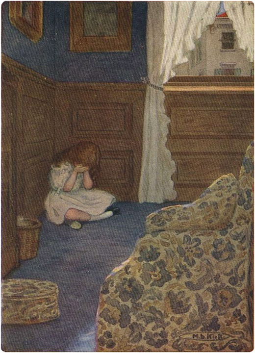

Nenek memanggil Heidi setiap hari setelah makan malam, sementara Clara beristirahat dan Nona Rottenmeier menghilang ke kamarnya. Ia berbicara dengan Heidi dan menghiburnya dengan berbagai cara, menunjukkan cara membuat pakaian untuk boneka-boneka kecil cantik yang dibawanya. Tanpa disadari, Heidi telah belajar menjahit, dan sekarang membuat gaun dan mantel terindah untuk boneka-boneka kecil itu dari bahan-bahan indah yang diberikan neneknya. Seringkali Heidi membacakan cerita untuk wanita tua itu, karena semakin sering ia membaca ulang cerita-cerita itu, semakin berharga cerita-cerita itu baginya. Anak itu menghayati semuanya bersama orang-orang dalam dongeng dan selalu senang bersama mereka lagi. Tetapi ia tidak pernah terlihat benar-benar ceria dan matanya tidak pernah berbinar riang seperti sebelumnya.
Pada minggu terakhir masa tinggal Nyonya Sesemann, Heidi dipanggil lagi ke kamar wanita tua itu. Anak itu masuk dengan buku kesayangannya di bawah lengannya. Nyonya Sesemann menarik Heidi mendekat, dan meletakkan buku itu ke samping, lalu berkata: "Kemarilah, Nak, dan ceritakan padaku mengapa kau begitu sedih. Apakah kesedihanmu masih sama?"
"Ya," jawab Heidi.
"Apakah kamu telah mempercayakannya kepada Tuhan kita?"
"Ya."
"Apakah kamu berdoa kepada-Nya setiap hari agar Dia membuatmu bahagia kembali dan menghilangkan penderitaanmu?"
"Oh tidak, saya tidak berdoa" lagi ."
"Apa yang kudengar, Heidi? Kenapa kau tidak berdoa?"
"Itu tidak membantu, karena Tuhan tidak mendengarkan. Saya tidak heran," tambahnya, "karena jika semua orang di Frankfurt berdoa setiap malam, Dia tidak mungkin mendengarkan mereka semua. Saya yakin Dia tidak mendengar saya."
"Benarkah? Mengapa kamu begitu yakin?"
"Karena aku telah berdoa untuk hal yang sama selama berminggu-minggu dan Tuhan belum melakukan apa yang kuminta."
"Bukan begitu caranya, Heidi. Kau tahu, Tuhan di surga adalah Bapa yang baik bagi kita semua, yang lebih tahu apa yang kita butuhkan daripada kita sendiri. Ketika sesuatu yang kita minta tidak begitu baik bagi kita, Dia memberi kita sesuatu yang jauh lebih baik, jika kita percaya kepada-Nya dan tidak kehilangan kepercayaan pada kasih-Nya. Aku yakin apa yang kau minta tadi tidak begitu baik bagimu; Dia telah mendengarmu, karena Dia dapat mendengar doa semua orang di dunia pada saat yang sama, karena Dia adalah Tuhan Yang Mahakuasa dan bukan manusia fana seperti kita. Dia mendengar doamu dan berkata kepada diri-Nya sendiri: 'Ya, Heidi akan mendapatkan apa yang dia doakan pada waktunya.' Nah, sementara Tuhan memperhatikanmu untuk mendengar doamu, kau kehilangan kepercayaan dan menjauh dari-Nya. Jika Tuhan tidak lagi mendengar doamu, Dia juga akan melupakanmu dan membiarkanmu pergi. Tidakkah kau ingin kembali kepada-Nya, Heidi, dan memohon pengampunan-Nya? Berdoalah kepada-Nya setiap hari, dan berharaplah kepada-Nya, agar Dia dapat memberikan sukacita dan kebahagiaan kepadamu."
Heidi mendengarkan dengan penuh perhatian; ia memiliki kepercayaan yang tak terbatas pada wanita tua itu, yang kata-katanya telah meninggalkan kesan mendalam padanya. Penuh penyesalan, ia berkata: "Aku akan segera pergi dan memohon kepada Bapa untuk mengampuniku. Aku tidak akan pernah melupakan-Nya lagi !"
"Benar sekali, Heidi; Ibu yakin Dia akan membantumu pada waktunya, jika kamu hanya percaya kepada-Nya," neneknya menghiburnya. Heidi kemudian pergi ke kamarnya dan berdoa dengan sungguh-sungguh kepada Tuhan agar Dia mengampuninya dan mengabulkan keinginannya.
Hari keberangkatan telah tiba, tetapi Ny. Sesemann mengatur semuanya sedemikian rupa sehingga anak-anak hampir tidak menyadari bahwa dia sebenarnya akan pergi. Meskipun begitu, semuanya terasa kosong dan sunyi setelah dia pergi, dan anak-anak hampir tidak tahu bagaimana menghabiskan waktu mereka.
Keesokan harinya, Heidi datang menemui Clara di sore hari dan berkata: "Bisakah aku selalu, selalu membacakan cerita untukmu sekarang, Clara?"
Clara mengiyakan, dan Heidi mulai membaca. Tetapi ia tidak membaca sampai selesai, karena cerita yang dibacanya mengisahkan kematian seorang nenek. Tiba-tiba ia berteriak keras: "Oh, nenek sudah meninggal!" dan menangis dengan sangat pilu. Apa pun yang dibaca Heidi selalu terasa nyata baginya, dan sekarang ia mengira itu adalah neneknya sendiri di rumah. Ia terisak semakin keras : "Nenekku yang malang sudah meninggal dan aku tidak akan pernah bisa melihatnya lagi ; dan ia tidak pernah mendapatkan satu gulungan pun!"
Clara mencoba menjelaskan kesalahan itu, tetapi Heidi terlalu sedih. Ia membayangkan betapa mengerikannya jika kakeknya yang terkasih juga meninggal saat ia berada jauh. Betapa sunyi dan kosongnya gubuk itu, dan betapa kesepiannya dia!
Nona Rottenmeier mendengar suara itu, dan mendekati anak yang menangis tersedu-sedu itu, ia berkata dengan tidak sabar: "Adelheid, kau sudah cukup menangis. Jika aku mendengar kau menangis lagi dengan berisik seperti itu, aku akan mengambil bukumu selamanya!"
Heidi menjadi pucat pasi mendengar itu, karena buku itu adalah harta terbesarnya. Dengan cepat mengeringkan air matanya, ia menahan isak tangisnya. Setelah itu Heidi tidak pernah menangis lagi; seringkali ia hampir tidak bisa menahan isak tangisnya dan terpaksa membuat ekspresi wajah yang aneh agar tidak menangis. Clara sering memandanginya dengan heran, tetapi Nona Rottenmeier tidak memperhatikannya dan tidak menemukan alasan untuk melaksanakan ancamannya. Namun, anak malang itu semakin murung setiap hari, dan tampak begitu kurus dan pucat sehingga Sebastian menjadi khawatir. Ia mencoba membujuknya di meja makan untuk mengambil semua hidangan yang enak, tetapi dengan lesu ia membiarkannya lewat dan hampir tidak menyentuhnya. Di malam hari ia akan menangis pelan, hatinya dipenuhi kerinduan untuk pulang.
Begitulah waktu berlalu. Heidi tidak pernah tahu apakah itu musim panas atau musim dingin, karena dinding di seberangnya tidak pernah berubah. Mereka jarang sekali keluar rumah, karena Clara hanya mampu berjalan dalam jarak pendek. Mereka tidak pernah melihat apa pun selain jalanan, rumah-rumah, dan orang-orang yang sibuk; tidak ada rumput, tidak ada pohon cemara, dan tidak ada gunung. Heidi terus berjuang melawan kesedihannya, tetapi sia-sia. Musim gugur dan musim dingin telah berlalu, dan Heidi tahu bahwa waktunya akan tiba ketika Peter akan pergi ke Pegunungan Alpen bersama kambing-kambingnya, di mana bunga-bunga berkilauan di bawah sinar matahari dan gunung-gunung tampak menyala. Dia akan duduk di sudut kamarnya dan menutupi matanya dengan kedua tangan, agar tidak melihat sinar matahari yang menyilaukan di dinding seberang. Di sana dia akan tetap tinggal, meratapi kerinduannya, sampai Clara memanggilnya untuk datang.


DI SANA DIA AKAN TETAP TINGGAL, MENGHANCURKAN HATINYA DENGAN KERINDUAN .